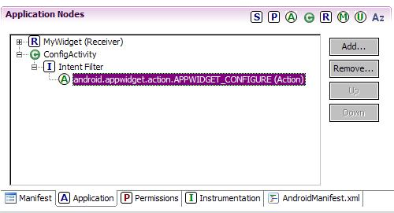
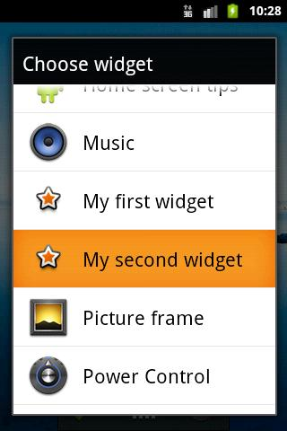
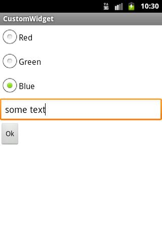
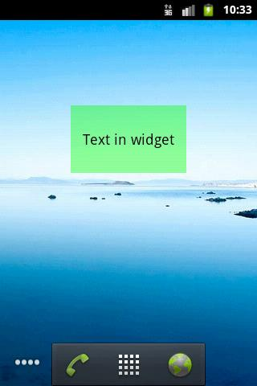
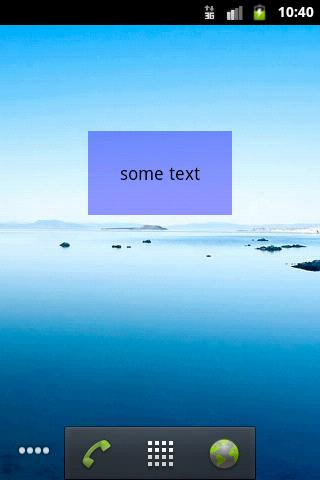
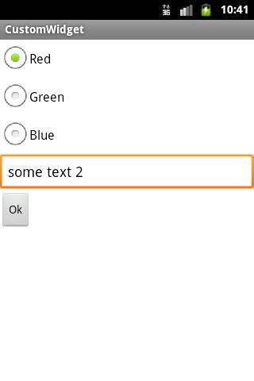
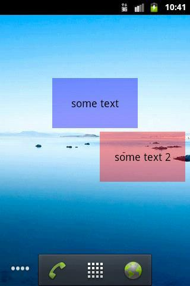

В этом уроке:
- настраиваем виджет при размещении
- работаем с view-компонентами виджета при обновлении
Некоторые виджеты при размещении отображают конфигурационный экран, который позволяет настроить их. Например, у вас есть в электронный счет на каком-либо сайте. И для этого сайта есть приложение-виджет. Чтобы виджет смог показать баланс именно вашего счета, он должен знать логин-пароль. Как вы понимаете, при разработке невозможно (если, конечно, вы не пишете виджет только для себя) зашить в код виджета нужный пароль и логин пользователя, поэтому эти данные надо у пользователя спросить.
Для этих целей и существует конфигурационный экран (конфигурационное Activity). Он предложит пользователю поля для ввода и сохранит куда-либо (БД, Preferences, …) введенные данные, а при обновлении виджета эти данные будут считаны и использованы для отображения актуальной информации.
Либо, например, мы хотим настроить внешний вид виджета при размещении. Давайте реализуем такой функционал в этом уроке. Возьмем проект из прошлого урока и добавим к нему возможность конфигурирования. Будем настраивать цвет фона виджета и отображаемый текст.
Создадим приложение с виджетом аналогично предыдущему уроку.
Параметры нового проекта:
Project name: P1181_CustomWidget
Build Target: Android 4.0
Application name: CustomWidget
Package name: ru.startandroid.develop.p1181customwidget
Я не буду дублировать все исходники прошлого урока, чтобы не загромождать этот. Напомню только, что надо будет создать layout-файл, файл метаданных, класс-наследник AppWidgetProvider и настроить манифест. Ну и про файл strings.xml не забывайте.
В strings.xml давайте поменяем параметр widget_name (чтобы виджеты прошлого и этого урока отличались друг от друга в списке виджетов):
<string name="widget_name">My second widget</string>
и добавим строки:
<string name="red">Red</string>
<string name="green">Green</string>
<string name="blue">Blue</string>
<string name="ok">Ok</string>
Теперь будем добавлять возможность конфигурирования. Для этого нам надо создать Activity. Это Activity будет запускаться системой при добавлении нового экземпляра виджета и на вход получать ID этого экземпляра.
Конфигурационное Activity - совершенно обычное Activity, состоящее из layout-файла и класса.
Начнем с создания layout-файла config.xml:
<?xml version="1.0" encoding="utf-8"?>
<LinearLayout
xmlns:android="http://schemas.android.com/apk/res/android"
android:layout_width="match_parent"
android:layout_height="match_parent"
android:orientation="vertical">
<RadioGroup
android:id="@+id/rgColor"
android:layout_width="wrap_content"
android:layout_height="wrap_content">
<RadioButton
android:id="@+id/radioRed"
android:layout_width="wrap_content"
android:layout_height="wrap_content"
android:checked="true"
android:text="@string/red">
</RadioButton>
<RadioButton
android:id="@+id/radioGreen"
android:layout_width="wrap_content"
android:layout_height="wrap_content"
android:text="@string/green">
</RadioButton>
<RadioButton
android:id="@+id/radioBlue"
android:layout_width="wrap_content"
android:layout_height="wrap_content"
android:text="@string/blue">
</RadioButton>
</RadioGroup>
<EditText
android:id="@+id/etText"
android:layout_width="match_parent"
android:layout_height="wrap_content"
android:ems="10">
<requestFocus>
</requestFocus>
</EditText>
<Button
android:layout_width="wrap_content"
android:layout_height="wrap_content"
android:onClick="onClick"
android:text="@string/ok">
</Button>
</LinearLayout>Три радиокнопки для задания цвета и текстовое поле для текста. Этими настройками будем задавать фон и текст TextView виджета. По нажатию кнопки Ok будем закрывать экран настроек.
Создаем класс для Activity
ConfigActivity.java:
package ru.startandroid.develop.p1181customwidget;
import android.app.Activity;
import android.appwidget.AppWidgetManager;
import android.content.Intent;
import android.content.SharedPreferences;
import android.content.SharedPreferences.Editor;
import android.graphics.Color;
import android.os.Bundle;
import android.util.Log;
import android.view.View;
import android.widget.EditText;
import android.widget.RadioGroup;
public class ConfigActivity extends Activity {
int widgetID = AppWidgetManager.INVALID_APPWIDGET_ID;
Intent resultValue;
final String LOG_TAG = "myLogs";
public final static String WIDGET_PREF = "widget_pref";
public final static String WIDGET_TEXT = "widget_text_";
public final static String WIDGET_COLOR = "widget_color_";
@Override
protected void onCreate(Bundle savedInstanceState) {
super.onCreate(savedInstanceState);
Log.d(LOG_TAG, "onCreate config");
// извлекаем ID конфигурируемого виджета
Intent intent = getIntent();
Bundle extras = intent.getExtras();
if (extras != null) {
widgetID = extras.getInt(AppWidgetManager.EXTRA_APPWIDGET_ID,
AppWidgetManager.INVALID_APPWIDGET_ID);
}
// и проверяем его корректность
if (widgetID == AppWidgetManager.INVALID_APPWIDGET_ID) {
finish();
}
// формируем intent ответа
resultValue = new Intent();
resultValue.putExtra(AppWidgetManager.EXTRA_APPWIDGET_ID, widgetID);
// отрицательный ответ
setResult(RESULT_CANCELED, resultValue);
setContentView(R.layout.config);
}
public void onClick(View v) {
int selRBColor = ((RadioGroup) findViewById(R.id.rgColor))
.getCheckedRadioButtonId();
int color = Color.RED;
switch (selRBColor) {
case R.id.radioRed:
color = Color.parseColor("#66ff0000");
break;
case R.id.radioGreen:
color = Color.parseColor("#6600ff00");
break;
case R.id.radioBlue:
color = Color.parseColor("#660000ff");
break;
}
EditText etText = (EditText) findViewById(R.id.etText);
// Записываем значения с экрана в Preferences
SharedPreferences sp = getSharedPreferences(WIDGET_PREF, MODE_PRIVATE);
Editor editor = sp.edit();
editor.putString(WIDGET_TEXT + widgetID, etText.getText()
.toString());
editor.putInt(WIDGET_COLOR + widgetID, color);
editor.commit();
// положительный ответ
setResult(RESULT_OK, resultValue);
Log.d(LOG_TAG, "finish config " + widgetID);
finish();
}
}
Для начала озвучу пару фактов из жизни конфигурационного Activity.
1) При вызове оно получает Intent, в котором содержится ID создаваемого экземпляра виджета.
2) При закрытии оно должно формировать результат методом setResult. И в этом ответе передавать Intent с ID экземпляра. Этот механизм мы рассматривали в Уроке 29. Документация рекомендует при создании Activity сразу формировать отрицательный результат. В этом случае, если пользователь нажмет Назад, система получит ответ, что виджет создавать не надо.
В onCreate мы из Intent (параметр EXTRA_APPWIDGET_ID) извлекаем ID экземпляра виджета, который будет конфигурироваться этим экраном. Если видим, что получен некорректный ID, выходим. Если все ок, то формируем Intent с ID для метода setResult и говорим, что результат отрицательный. Теперь, если пользователь передумает создавать виджет и нажмет в конфигурационном экране Назад, то система будет знать, что виджет создавать не надо.
В onClick мы читаем выбранный цвет и введенный в поле текст и пишем эти значения в Preferences. В имени записываемого параметра мы используем ID, чтобы можно было отличать параметры разных экземпляров друг от друга. Далее мы говорим системе, что результат работы положительный, и виджет можно создавать. Закрываем Activity.
Добавим Activity в манифест и настроим ему фильтр с action = android.appwidget.action.APPWIDGET_CONFIGURE.

Также необходимо добавить в файл метаданных (xml/widget_metadata.xml) параметр android:configure и указать в нем полный путь к классу Activity
android:configure="ru.startandroid.develop.p1181customwidget.ConfigActivity"Теперь система будет знать, что ей надо вызвать Activity (указанное в метаданных) при добавлении очередного экземпляра виджета. А т.к. при вызове она использует action android.appwidget.action.APPWIDGET_CONFIGURE, поэтому мы прописали его в манифесте.
Итак, мы в Activity получили ID экземпляра виджета и записали настройки с экрана в Preferences. Теперь нам надо при обновлении виджета эти настройки читать и применять к внешнему виду.
Меняем MyWidget.java:
package ru.startandroid.develop.p1181customwidget;
import java.util.Arrays;
import android.appwidget.AppWidgetManager;
import android.appwidget.AppWidgetProvider;
import android.content.Context;
import android.content.SharedPreferences;
import android.content.SharedPreferences.Editor;
import android.util.Log;
import android.widget.RemoteViews;
public class MyWidget extends AppWidgetProvider {
final static String LOG_TAG = "myLogs";
@Override
public void onEnabled(Context context) {
super.onEnabled(context);
Log.d(LOG_TAG, "onEnabled");
}
@Override
public void onUpdate(Context context, AppWidgetManager appWidgetManager,
int[] appWidgetIds) {
super.onUpdate(context, appWidgetManager, appWidgetIds);
Log.d(LOG_TAG, "onUpdate " + Arrays.toString(appWidgetIds));
SharedPreferences sp = context.getSharedPreferences(
ConfigActivity.WIDGET_PREF, Context.MODE_PRIVATE);
for (int id : appWidgetIds) {
updateWidget(context, appWidgetManager, sp, id);
}
}
@Override
public void onDeleted(Context context, int[] appWidgetIds) {
super.onDeleted(context, appWidgetIds);
Log.d(LOG_TAG, "onDeleted " + Arrays.toString(appWidgetIds));
// Удаляем Preferences
Editor editor = context.getSharedPreferences(
ConfigActivity.WIDGET_PREF, Context.MODE_PRIVATE).edit();
for (int widgetID : appWidgetIds) {
editor.remove(ConfigActivity.WIDGET_TEXT + widgetID);
editor.remove(ConfigActivity.WIDGET_COLOR + widgetID);
}
editor.commit();
}
@Override
public void onDisabled(Context context) {
super.onDisabled(context);
Log.d(LOG_TAG, "onDisabled");
}
static void updateWidget(Context context, AppWidgetManager appWidgetManager,
SharedPreferences sp, int widgetID) {
Log.d(LOG_TAG, "updateWidget " + widgetID);
// Читаем параметры Preferences
String widgetText = sp.getString(ConfigActivity.WIDGET_TEXT + widgetID, null);
if (widgetText == null) return;
int widgetColor = sp.getInt(ConfigActivity.WIDGET_COLOR + widgetID, 0);
// Настраиваем внешний вид виджета
RemoteViews widgetView = new RemoteViews(context.getPackageName(),
R.layout.widget);
widgetView.setTextViewText(R.id.tv, widgetText);
widgetView.setInt(R.id.tv, "setBackgroundColor", widgetColor);
// Обновляем виджет
appWidgetManager.updateAppWidget(widgetID, widgetView);
}
} В onUpdate мы перебираем все ID экземпляров, которые необходимо обновить и для каждого из них вызываем наш метод обновления, который рассмотрим чуть ниже.
onDeleted у нас вызывается, когда виджет удаляется с экрана. Если виджет удален, то логично будет удалить и все настройки для него из Preferences. Это и делаем.
Метод updateWidget обновляет конкретный экземпляр виджета, получая на вход его ID. Здесь мы читаем настройки (и сразу выходим, если нет настройки WIDGET_TEXT), которые записало нам конфигурационное Activity для этого экземпляра виджета. Нам надо применить эти параметры к view-компонентам нашего виджета. Но (насколько я это понимаю) за отображение виджета отвечает один процесс (какой-нибудь Home), а наш код из MyWidget будет выполняться в другом, своем собственном процессе. Поэтому у нас нет прямого доступа к view-компонентам виджета. И мы не можем вызывать метода типа setText и setBackgroundColor напрямую. Поэтому используется класс RemoteViews, он предназначен для межпроцессной работы с view.
Создаем RemoteViews. На вход он принимает имя пакета нашего приложения и ID layout-файла виджета. Теперь RemoteViews знает view-структуру нашего виджета. Осталось понять, как настраивать конкретные view. Это немного отличается от привычной нам работы с view-компонентами.
RemoteViews имеет несколько методов работы с view, где мы указываем ID нужного нам view-компонента и значение, которое хотим передать. Из названия этих методов понятно, что они делают. В нашем случае мы используем метод setTextViewText. По названию понятно, что этот метод вставит текст в TextView. Мы вызываем его и передаем ID нашего TextView (из layout-файла виджета) и текст, который хотим в него поместить. Система потом найдет в виджете view с указанным ID (R.id.tv), и вызовет для него метод setText с указанным текстом (widgetText).
Но таких явных методов немного. Они созданы просто для удобства и являются оболочками общих методов, которые позволяют вызвать любой метод view.
В названии общего метода содержится тип данных, которые вы хотите передать. А на вход методу кроме ID view и значения, необходимо будет указать имя метода. В нашем случае мы хотим присвоить цвет фону TextView. Цвет у нас типа int, поэтому мы вызываем метод setInt и передаем ему ID view, имя метода (который бы вызывали в случае доступа к view – setBackgroundColor) и значение цвета. Система найдет в виджете view с указанным ID (R.id.tv) и вызовет для него указанный метод (setBackgroundColor) с указанным значением (widgetColor).
RemoteViews сформирован. Используем AppWidgetManager, чтобы применить к виджету наши сформированные view-настройки. Для этого используется метод updateAppWidget, который на вход берет ID экземпляра виджета и объект RemoteViews. Система найдет указанный экземпляр виджета и настроит его так, как мы только что накодили.
В итоге у нас получилось, что Activity настройки пишет, а MyWidget читает и применяет при обновлении виджета.
Все сохраняем и запускаем (инсталлим) приложение.
В списке виджетов выбираем наш My second widget (не перепутайте с виджетом с прошлого урока)

и видим наше Activity. Давайте цвет сделаем синий, и введем какой-нибудь текст.

Жмем Ok. Виджет не изменился.

Давайте смотреть логи, чтобы понять причину.
onEnabled
onUpdate [28]
updateWidget 28
onCreate config
finish config 28
onEnabled – размещение первого экземпляра.
Затем вызвался onUpdate и попытался обновить (updateWidget) экземпляр с ID 28 (у вас может быть другой). Но т.к. никаких Preferences для него мы еще на тот момент не настроили, то обновление не произошло. Напомню, что такое поведение мы накодили в методе updateWidget. Если он не находит текст в WIDGET_TEXT, то он завершается.
А вот уже после этого запустилось Activity (onCreate). В нем мы сделали необходимые настройки и нажали Ок, отработал finish.
Т.е. что получилось? onUpdate вызвался ПЕРЕД конфигурированием (когда настройки виджета еще не были сохранены), но не вызвался ПОСЛЕ завершения работы конфигурационного экрана (когда настройки сохранены и их можно использовать для обновления). Т.е. настройки мы в Activity сохранили, но виджет их пока не прочел. Теперь эти настройки применятся только при следующем обновлении, т.е. через 40 минут, как мы указывали в файле метаданных.
Зачем делается onUpdate перед вызовом Activity – непонятно. К тому же в документацие написано, что не может такого быть:
"… when you implement the Activity: … The onUpdate() method will not be called when the App Widget is created."
В общем, это известный баг, смиримся с ним. К тому же у нас в методе updateWidget стоит защита от этого – мы проверяем, что в Preferences записан WIDGET_TEXT. Если его нет, то мы ничего не делаем.
Нам осталось придумать, как сделать так, чтобы наш виджет сразу подхватывал изменения после закрытия конфигурационного экрана, а не ожидал следующего обновления по расписанию. Для этого мы можем обновлять виджет вручную при успешном закрытии Activity, ведь мы знаем ID экземпляра. Будем вызывать метод updateWidget из класса MyWidget. Именно для этого мы и сделали его static.
В ConfigActivity в метод onClick надо добавить пару строк:
AppWidgetManager appWidgetManager = AppWidgetManager.getInstance(this);
MyWidget.updateWidget(this, appWidgetManager, sp, widgetID);В этих строках мы вызываем метод updateWidget и передаем туда context, AppWidgetManager, SharedPreferences и ID экземпляра. Они должны сработать после того, как мы сохраним Preferences, поэтому поместите их в методе onClick после строки
editor.commit();В результате виджет обновится при закрытии Activity.
Все сохраним, запустим. При переустановке приложения сработал onUpdate (см. логи) для первого экземпляра, он прочел свои настройки и стал таким, каким мы его настраивали.

Добавим второй экземпляр. Настроим его

Жмем Ок. Видим, что обновление сработало.

Смотрим логи:
onUpdate [29]
updateWidget 29
onCreate config
updateWidget 29
finish config 29
Видим, что сработал updateWidget примерно в одно время с закрытием Activity (очередность зависит от того, куда вы поместили две строки обновления виджета).
Напоследок попробуйте добавить еще один экземпляр виджета, но нажмите Назад в конфигурационном Activity. Виджет не должен появиться. А логи покажут следующее:
onUpdate [30]
updateWidget 30
onCreate config
onDeleted [30]
Т.е. виджет таки создался, но после закрытия Activity был удален системой, т.к. мы передали RESULT_CANCELED в setResult.
В общем не очень тривиально и схема может поначалу показаться запутанной. Поэкспериментируйте, подобавляйте свои настройки виджета и все должно стать понятнее.
Чтобы двигаться дальше по теме виджетов, нужны будут некоторые доп.знания. Поэтому следующий урок будет небольшим отступлением от темы. Но это отступление само по себе будет интересным и полезным.